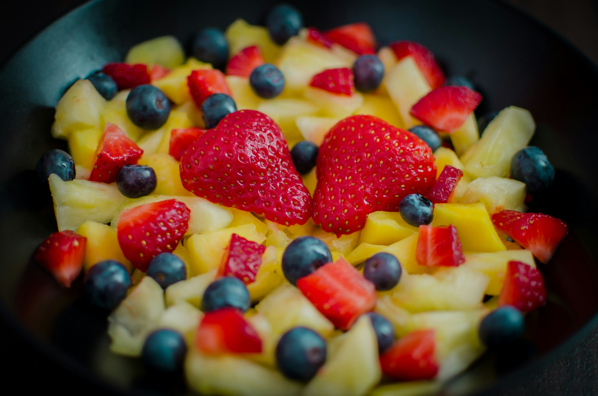
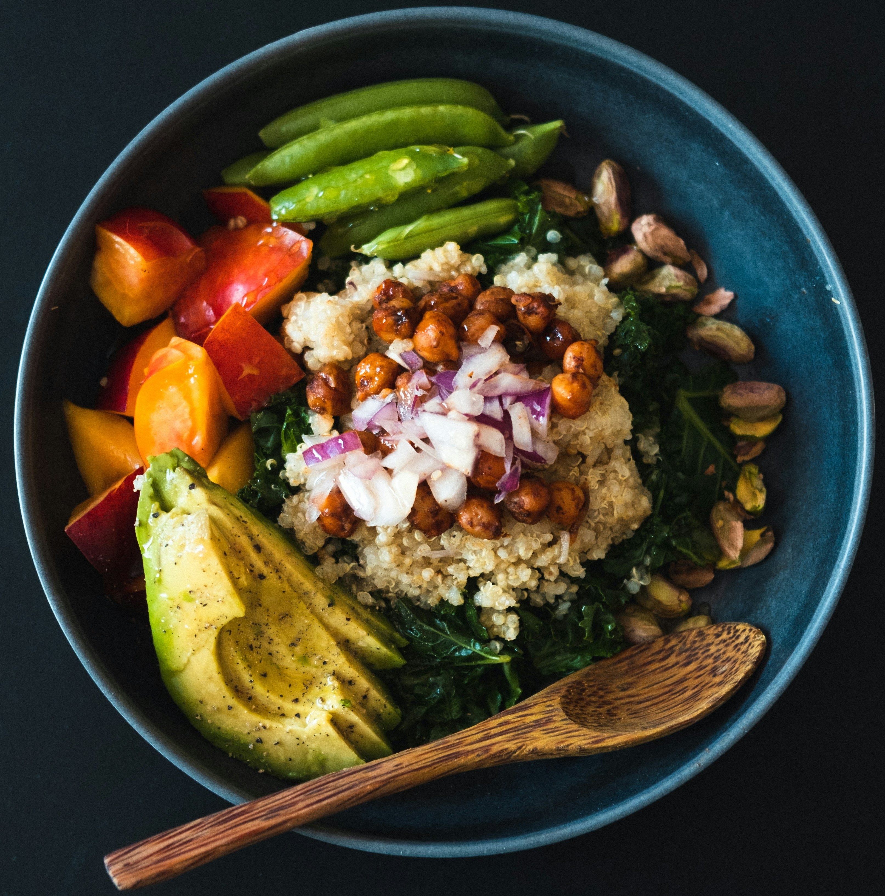
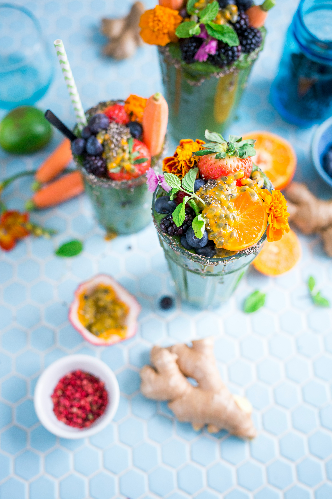

Nutrient-Rich: Green salads are packed with vitamins, minerals, and fiber essential for growing children. They often contain leafy greens like spinach or kale, which are rich in vitamin K, vitamin C, iron, and calcium.

Fruit Cake
Fruit cake is a rich, dense cake made with a variety of dried fruits, nuts, and spices. It is often enjoyed during holidays and special occasions.

Nutririch Mix
Nutrient-Rich: Green salads are packed with vitamins, minerals, and fiber essential for growing children. They often contain leafy greens like spinach or kale, which are rich in vitamin K, vitamin C, iron, and calcium.

Berry Blast Smoothie
A vibrant mix of strawberries, blueberries, and raspberries, combined with a hint of honey and a dash of almond milk for a deliciously sweet and nutritious treat.